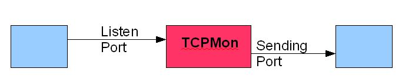
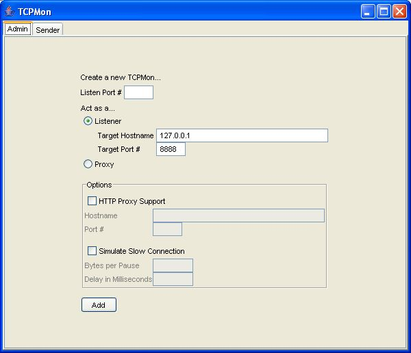
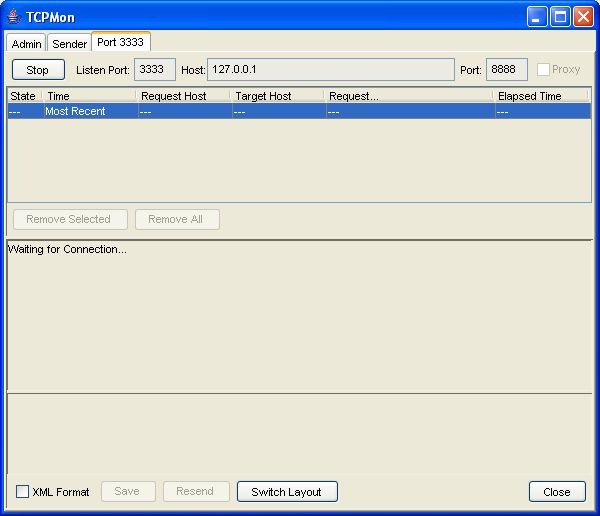
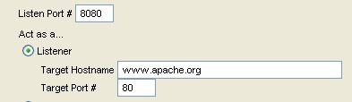
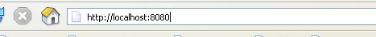
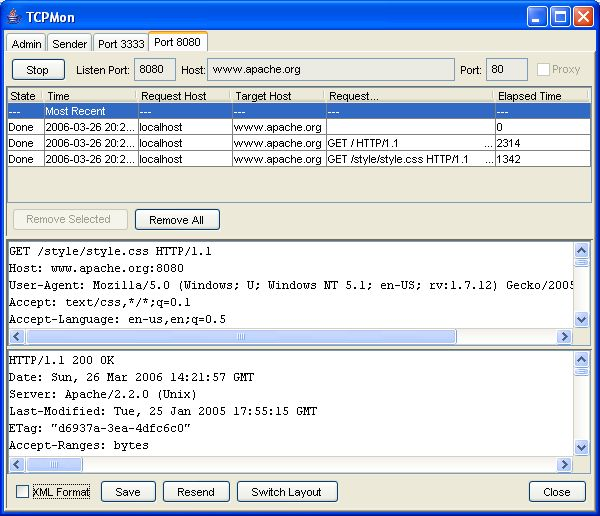
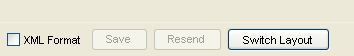
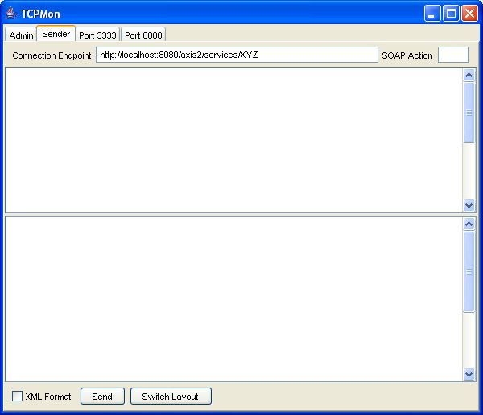
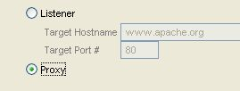
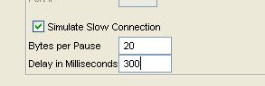

Tcpmon es una utilidad que permite al usuario controlar los mensajes transmitidos a lo largo de la conversación basada en TCP. Se basa en una interfaz de usuario SWING y funciona en casi todas las plataformas compatibles con Java. El objetivo de este sencillo tutorial es explicar cómo funciona tcpmon y también para explicar algunas de sus características.
Tcpmon tiene no tiene ninguna dependencia de las bibliotecas de terceros. Pero algunas características de la interfaz de usuario dependen de JDK 1.4 así tcpmon necesita un JRE que es 1.4 o superior.
El patrón de uso más común para la tcpmon es como intermediario. Se llama explícito ya que el cliente tiene que apuntar al intermediario en lugar del punto final para monitorizar los mensajes. La siguiente figura explica este concepto.

Con el fin de iniciar el tcpmon en esta configuración se tiene que proporcionar el nombre de host y el puerto para el oyente en la pantalla de administración. Ver imagen de abajo.

Al pulsar el botón "añadir" se abre una nueva pestaña que permite que los mensajes sean vistos como en la siguiente pantalla

En este punto, el solicitante debe apuntar al puerto de escucha del tcpmon en lugar del punto final origial. Vamos a entender esto con un ejemplo:
Diga todos los mensajes pasados entre www.apache.org necesitan ser monitoreados.
Paso 1 - Añadir un oyente con el anfitrión como www.apache.org y puerto como 80. Establecer el oyente al puerto 8080 que puede ser cualquier puerto no utilizado en la máquina local

Paso 2 - Apunte el navegador a localhost:8080 en lugar de www.apache.org.

Una vez que los mensajes comienzan a fluir que se pueden ver en la ficha correspondiente como se ve a continuación.

Los controles inferiores permiten que los mensajes sean en formato XML (útil en la depuración de los servicios Web), guardar y reenviar los mensajes, y también para cambiar la disposición de las ventanas de mensajes.

Tcpmon también se puede utilizar como un remitente de solicitudes de servicios Web. El mensaje de solicitud SOAP se puede pegar en la pantalla de envío y luego envía directamente al servidor.

Tcpmon puede actuar como un proxy. Para iniciar el tcpmon en modo proxy, sólo tienes que seleccionar la opción proxy desde los botones radio. Al actuar como un proxy, tcpmon sólo necesita el puerto de escucha para ser configurado.

Tcpmon puede simular una conexión lenta, en cuyo caso la demora y los bytes que se retiren se puede configurar. Esto es especialmente útil en la prueba de los servicios Web.

Si se requiere soporte de proxy HTTP, también se puede ajustar en la pantalla de administración.
Tcpmon es una herramienta sencilla y fácil de usar que tiene muchos beneficios en el desarrollo de aplicaciones de mensajes impulsados. Es particularmente útil en el desarrollo de servicios Web